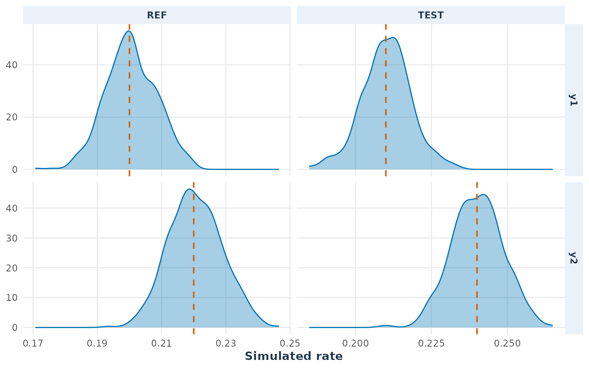
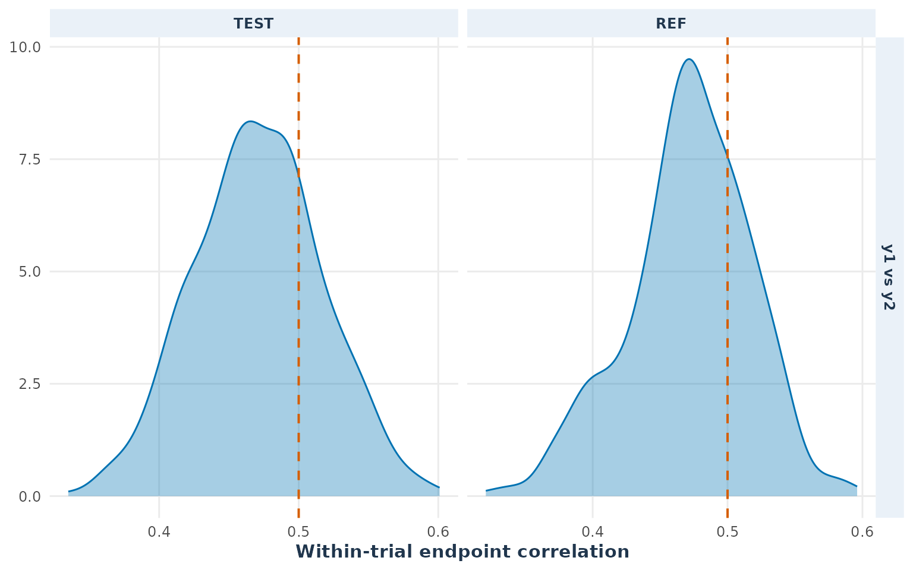
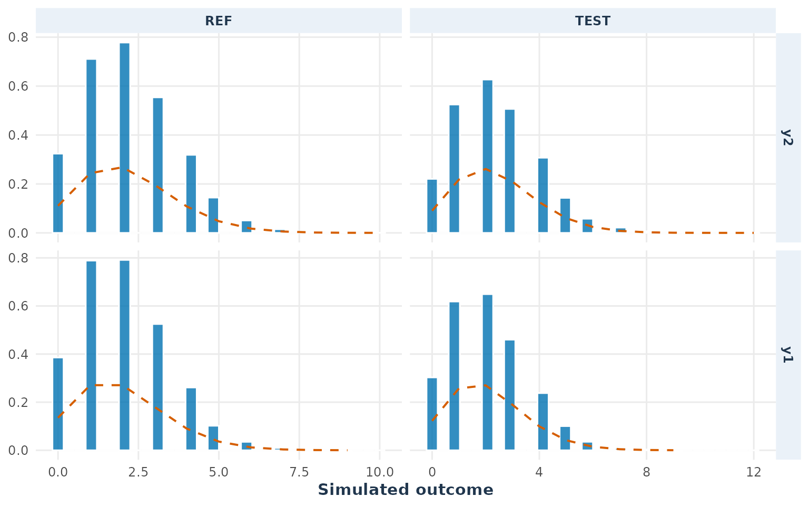
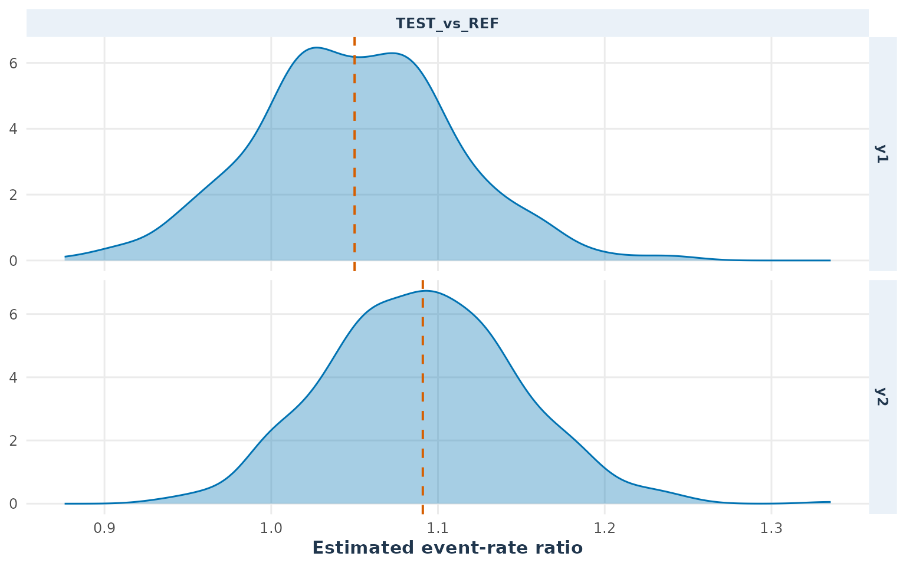
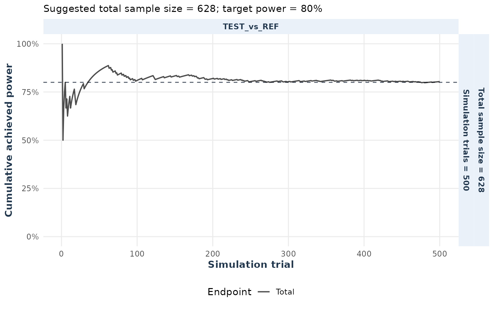
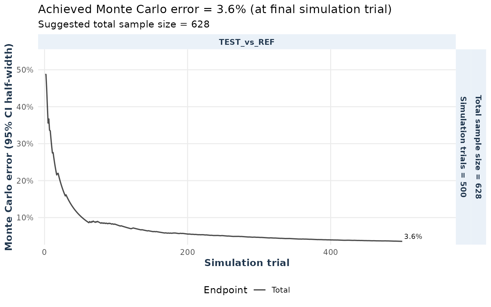
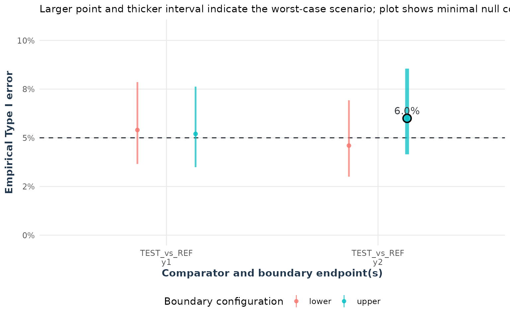
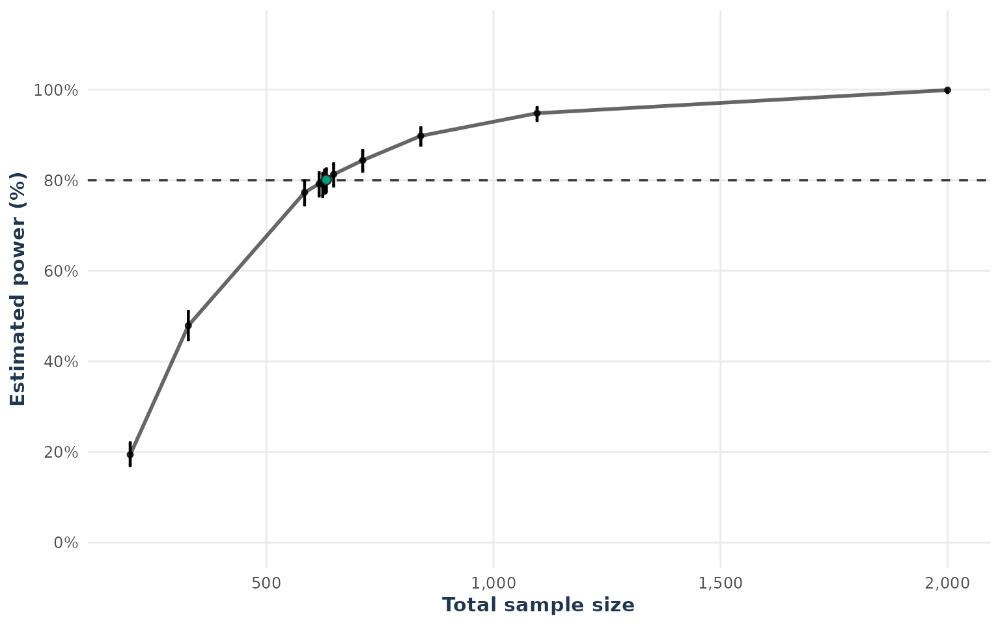
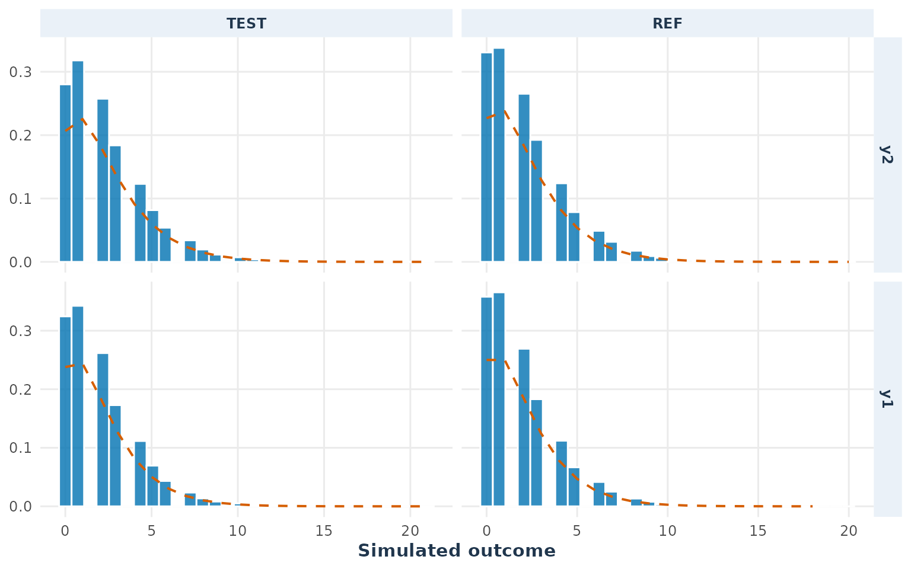

count.RmdThis vignette follows the workflow in workflow.Rmd for
count outcomes. It starts with a published two-arm Poisson benchmark,
then validates a two-endpoint Poisson model, calculates its required
sample size, repeats the calculation under a negative-binomial model,
and finally uses the same model settings for a balanced two-by-two
crossover design.
For count outcomes, the estimand is the event-rate ratio
where the first arm in each comparator is the test arm and the second is the reference arm. Equivalence is assessed using two one-sided tests on the log-rate-ratio scale. The workflow separates model validation from the final equivalence calculation: first check the supplied parameters and retained simulated data, then calculate and interpret the sample size.
Zhu (Zhu 2017) reports a two-arm Poisson equivalence calculation with equal event rates of 1 per time unit, average exposure of 0.7, equivalence limits of 0.9 and , one-sided , and 2,705 participants per arm. The reported total sample size is 5,410, with approximated power 0.80012.
zhu_benchmark <- simPower(
n = 2705,
distribution = "pois",
rate_list = list(TEST = 1, REF = 1),
list_comparator = list(TEST_vs_REF = c("TEST", "REF")),
list_lequi.tol = list(TEST_vs_REF = 0.9),
list_uequi.tol = list(TEST_vs_REF = 1 / 0.9),
exposure = 0.7,
dtype = "parallel",
alpha = 0.025,
nsim = 5000,
seed = 2024
)
zhu_benchmark
#> Fixed-sample-size power
#> Distribution: pois
#> Sample size: 2705
#> Power: 0.7936 [0.7821, 0.8047]
data.frame(reference_power = 0.80012,
simulated_power = zhu_benchmark$power,
simulated_lower = zhu_benchmark$power_LCI,
simulated_upper = zhu_benchmark$power_UCI)
#> reference_power simulated_power simulated_lower simulated_upper
#> 1 0.80012 0.7936 0.7820566 0.8046886The simulation need not reproduce the published value exactly. The
published result is a large-sample approximation, whereas
simPower() simulates discrete event totals and reports a
finite-sample Monte Carlo estimate.
We now use the two-endpoint settings used throughout the rest of this vignette. The supplied endpoint correlation is a latent Gaussian-copula correlation, not the expected Pearson correlation of the observed counts.
count_corr <- matrix(c(1, 0.5, 0.5, 1), nrow = 2,
dimnames = list(c("y1", "y2"), c("y1", "y2")))
count_rates <- list(TEST = c(y1 = 0.21, y2 = 0.24),
REF = c(y1 = 0.20, y2 = 0.22))
count_comparators <- list(TEST_vs_REF = c("TEST", "REF"))
count_lower <- list(TEST_vs_REF = c(y1 = 0.80, y2 = 0.80))
count_upper <- list(TEST_vs_REF = c(y1 = 1.25, y2 = 1.25))
count_exposure <- 10As in the workflow vignette, first run a fixed-sample pilot while retaining the simulated data. This object is used for the diagnostics below.
poisson_diagnostic <- sampleSize(
distribution = "pois", rate_list = count_rates,
list_comparator = count_comparators,
list_lequi.tol = count_lower, list_uequi.tol = count_upper,
exposure = count_exposure, cor_mat = count_corr,
dtype = "parallel", nsim = 500, seed = 1234,
keep_sim_data = TRUE
)
poisson_diagnostic
#> Count-rate equivalence sample size
#> Subjects per arm: 314
#> Total subjects: 628
#> Endpoints: 2 (required: 2 )
#> Alpha adjustment: none
#> Achieved power: 0.8040 [0.7659, 0.8373]
confint(poisson_diagnostic)
#> Lower Upper
#> 0.7664479 0.8379112
#> attr(,"conf.level")
#> [1] 0.95The workflow checks result precision, marginal outcomes, exposure-adjusted rates, endpoint dependence, and Monte Carlo stability before planning.
plot_distribution(poisson_diagnostic, estimand = "rate")
The empirical rate distributions should be centered near the values
in count_rates.
plot_distribution(poisson_diagnostic, estimand = "correlation",
arms = c("TEST", "REF"))
The dashed line is the latent correlation supplied throughcount_corr. The observed Pearson correlation can differ
because the latent normal variables are transformed into discrete
counts. The plot checks the direction and approximate magnitude of the
generated dependence; endpoint_corr is the exact parameter
check.
plot_distribution(poisson_diagnostic, estimand = "outcome", type = "histogram")
The empirical counts should be compatible with the Poisson reference distribution.
plot_distribution(poisson_diagnostic, estimand = "RR")
plot_stability(poisson_diagnostic)
plot_mc_error(poisson_diagnostic)
type1_one <- type1Error(x = poisson_diagnostic, null = "both", joint = TRUE)
plot(type1_one)
This call uses exactly the rates, exposure, correlation matrix,
margins, and parallel design used by
poisson_diagnostic.
poisson_sample_size <- sampleSize(
power = 0.80, distribution = "pois", rate_list = count_rates,
list_comparator = count_comparators,
list_lequi.tol = count_lower, list_uequi.tol = count_upper,
exposure = count_exposure, cor_mat = count_corr, dtype = "parallel",
lower = 100, upper = 1000, nsim = 1000, seed = 1234, ncores = 1,
keep_sim_data = TRUE
)
summary(poisson_sample_size)
#> Sample Size Summary
#> ----------------------
#> Design type : parallel
#> Distribution : pois
#> Comparison type : RR
#> Estimand : event-rate ratio (lambda_T / lambda_R)
#> Hypotheses : H0: RR <= L or >= U; H1: L < RR < U
#> Alpha : 0.05
#> Target power : 0.8000
#> Achieved power : 0.8010
#> Power interval : [0.7746, 0.8250]
#> Required endpoints : 2
#> Alpha adjustment : none
#>
#> Equivalence Margins:
#> Comparison Endpoint Lower Upper
#> TEST_vs_REF y1 0.8 1.25
#> TEST_vs_REF y2 0.8 1.25
#>
#> Estimated Sample Size:
#> TEST REF Total
#> 316 316 632
confint(poisson_sample_size)
#> Lower Upper
#> 0.7748841 0.8253299
#> attr(,"conf.level")
#> [1] 0.95For final planning, increase nsim and independently
verify the selected sample size with simPower().
plot(poisson_sample_size)
The negative-binomial calculation keeps the same rates, exposure,
correlation, margins, and parallel design. The dispersion parameter
allows the count variance to exceed its Poisson value. We use
dispersion = 0.50 here as a deliberately visible
sensitivity example. For a mean count near 2, the Poisson variance is
about 2, whereas the negative-binomial variance is approximately
2 + 0.50 * 2^2 = 4.
nb_dispersion <- 0.50
negative_binomial_sample_size <- update(poisson_sample_size,
distribution = "nbinom",
dispersion = nb_dispersion)
summary(negative_binomial_sample_size)
#> Sample Size Summary
#> ----------------------
#> Design type : parallel
#> Distribution : nbinom
#> Comparison type : RR
#> Estimand : event-rate ratio (lambda_T / lambda_R)
#> Hypotheses : H0: RR <= L or >= U; H1: L < RR < U
#> Alpha : 0.05
#> Target power : 0.8000
#> Achieved power : 0.8000
#> Power interval : [0.7736, 0.8241]
#> Required endpoints : 2
#> Alpha adjustment : none
#>
#> Equivalence Margins:
#> Comparison Endpoint Lower Upper
#> TEST_vs_REF y1 0.8 1.25
#> TEST_vs_REF y2 0.8 1.25
#>
#> Estimated Sample Size:
#> TEST REF Total
#> 443 443 886
confint(negative_binomial_sample_size)
#> Lower Upper
#> 0.7738406 0.8243794
#> attr(,"conf.level")
#> [1] 0.95
plot_distribution(negative_binomial_sample_size, estimand = "outcome", type = "histogram")
The result is conditional on nb_dispersion; vary it in
sensitivity analyses when overdispersion is uncertain.
Finally, we retain the negative-binomial rates, exposure, dispersion,
correlation matrix, margins, and target power, and change only the
design to a balanced two-by-two crossover. For
dtype = "2x2", n and n_per_arm
refer to participants per sequence.
crossover_sample_size <- update(negative_binomial_sample_size,
dtype = "2x2")
summary(crossover_sample_size)
#> Sample Size Summary
#> ----------------------
#> Design type : 2x2
#> Distribution : nbinom
#> Comparison type : RR
#> Estimand : event-rate ratio (lambda_T / lambda_R)
#> Hypotheses : H0: RR <= L or >= U; H1: L < RR < U
#> Alpha : 0.05
#> Target power : 0.8000
#> Achieved power : 0.8030
#> Power interval : [0.7767, 0.8269]
#> Required endpoints : 2
#> Alpha adjustment : none
#>
#> Equivalence Margins:
#> Comparison Endpoint Lower Upper
#> TEST_vs_REF y1 0.8 1.25
#> TEST_vs_REF y2 0.8 1.25
#>
#> Estimated Sample Size:
#> seq0 seq1 Total
#> 229 229 458
confint(crossover_sample_size)
#> Lower Upper
#> 0.7769717 0.8272302
#> attr(,"conf.level")
#> [1] 0.95The crossover calculation uses the same treatment-effect and endpoint
settings but evaluates paired treatment-period data. Additional
assumptions can be supplied through sigmaB,
Eper, Eco, and dropout when
supported by the study design or prior data.
The Poisson, negative-binomial, and crossover results are conditional
on the specified rates, exposure, margins, endpoint dependence,
dispersion, and design. Compare sample sizes only after the
corresponding model checks pass. For count outcomes,
cor_mat is a latent Gaussian-copula correlation matrix; it
is not a correlation between treatment arms and is not required to equal
the Pearson correlation of the observed counts.